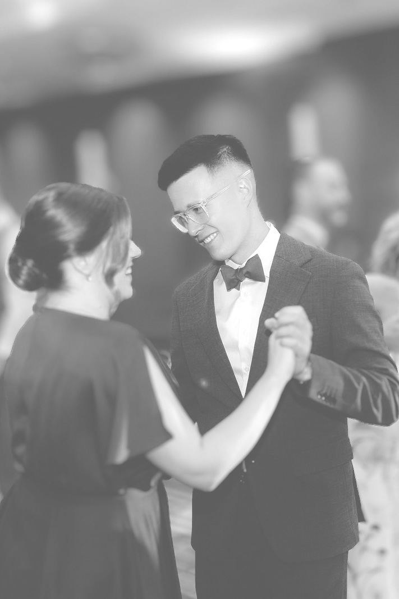
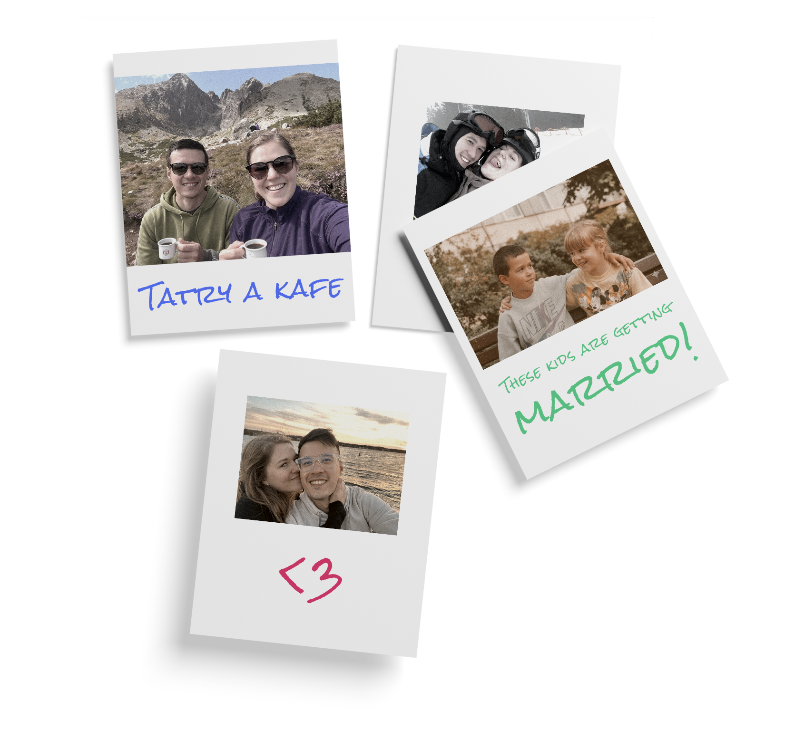

19/9/2026
Bratislava, Staré mesto

19/9/2026
Bratislava, Staré mesto
Obřad 14.00
Gratulace a focení
Svatební hostinaZačne asi 1 až 1.5 hodiny po skončení gratulací
Krájení dortu
První tanec novomanželů
Házení kytice
Čepčenie23.30

Děkujeme všem za nesmírnou podporu a už se nemůžeme dočkat až to spolu oslavíme. Obzvlášť si ceníme svatebčanů, kteří kvůli nám přijedou z dalekých koutů Česka, Slovenska, Rakouska a dalších exotických zemí. Pro všechny z vás, kteří k nám vážíte tak dalekou cestu, nebo jen nejste tolik zdomácnělí v Bratislavě, jsme níže připravili malou ochutnávku z míst, které máme rádi a které můžete vyzkoušet, máte-li chvíli čas.
Emil - Umění má různé podoby a některé lze vypít. Výběrovou kávu, naturální vína, i něco malého na zub najdete v Mirbachově paláci.
Bistro 24 - Je zařízeno v jednoduchém retro stylu, při kterém si zavzpomínáš na staré časy. Atmosféru dotváří školní židle a červený plechový pult.
Bistro Ferdinand - Bistro v nejstarším parku ve střední Evropě. Najdete ho uprostřed Sadu Janka Krále. Na své si zde přijdou masožravci, vegetariáni i vegani.
Gatto Matto - Restaurace s nádvořím v srdci starého města nabízí kulinářské a barové speciality v jedinečné atmosféře, inspirované Itálií.
SNG - Galerijní instituce s více než sedmdesátiletou historií a se současným pohledem na svět v areálu několika budov na dunajském nábřeží.
Nedbalka - Kulturní centrum se nachází ve 4. patře OD Prior na Kamenném náměstí.
Veža Starej radnice - Kromě nezaměnitelného pohledu na historické centrum města nabízí také nahlédnutí do kanceláře Ovídia Fausta - významného bratislavského archiváře a muzejníka či ukázky historických zvonů.
Výčap u Ernőho - Domovský výčep pivovaru Shenk.
Viecha naturálnych vinárov - Vinný bar v prostorách Staré tržnice, kde máte možnost ochutnat rozrůstající se kulturu naturálních a řemeslných vín z celého Slovenska.
Temný OST BLOCK - Noční kulturní playground s klubovou hudbou, oáza specialty kávy, květin a zenové pohody.